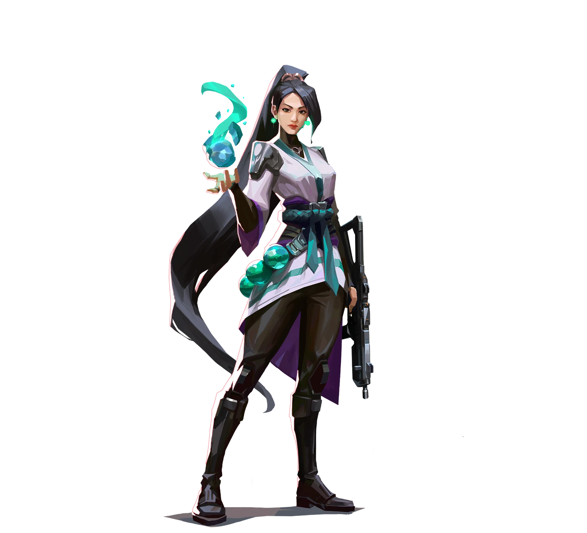

TYLOO / 张震
Scales.
ALL IN. EVERY ROUND.
ViperScales / 张震
Scales / 赛场档案IN EVERY
IN EVERY
ROUND.
2026-10-01 / Scales1 : 22026-09-24 / Scales0 : 22026-08-23 / Scales 3 : 12026-08-22 / Scales
3 : 12026-08-22 / Scales
1 : 2TYL / TL
↗Champions 2026 Group Stage ⋅ Elim (C)
Split 8 - 13 R 0.47 K / D / A 8 / 18 / 70 : 2TYL / G2
↗Champions 2026 Group Stage ⋅ Opening (C)
Lotus 6 - 13 R 0.79 K / D / A 10 / 13 / 13 : 1TYL / JDG
↗VCT 26: CN Stage 2 Playoffs ⋅ GF
Lotus 6 - 13 R 0.75 K / D / A 12 / 15 / 1
3 : 0TYL / BLG
↗VCT 26: CN Stage 2 Playoffs ⋅ LBF
Sunset 14 - 12 R 1.01 K / D / A 19 / 18 / 11人物 × 比赛数据海报 · 点击打开原始记录
英雄池 / 按职业出场地图排序
HEROES
ON DUTY.
每一次选下英雄，都是另一种表达。Viper.
蝰蛇 / 44% 使用占比
63出场地图
211.6平均战斗评分
1.10击杀 / 死亡
992总击杀
114首杀
VLR 全时期已收录职业数据 · 2026-11-02 快照 · 出场单位为地图，使用占比不是胜率。查看该选手原始统计
EVERY
ROUND.
143职业地图
2,003总击杀
0.99全英雄 K/D
Champions 2026 Group Stage ⋅
Elim (C)
TYL / TL1 : 2+
Champions 2026 Group Stage ⋅
Opening (C)
TYL / G20 : 2+
VCT 26: CN Stage 2 Playoffs ⋅
GF
TYL / JDG3 : 1+
VCT 26: CN Stage 2 Playoffs ⋅
LBF
TYL / BLG3 : 0+
VCT 26: CN Stage 2 Playoffs ⋅
LR3
TYL / NOVA2 : 0+
最近已收录系列赛；日期和比分沿用 VLR 公开记录。上方生涯总计由全英雄表求和，K/D 为总击杀除以总死亡。
下一位 / TYL 阵容